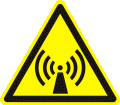
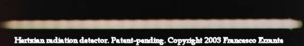

|
Planning a trip to Sicily? �Then,
make sure you won't be feeding the Mafia!
 |
|
|
Se hai un interesse scientifico in materia di fisica della
radio, visiona questo sito internet nell'ordine consigliato!
|
|
|
|
 |
Il POTERE IONIZZANTE
DELLA RADIAZIONE HERTZIANA (Meglio nota come onde
radio)
|
|
BREVETTO INDUSTIALE
n.0001347487 (ITAPA20030022)
Visita www.uibm.gov.it ed immetti
Francesco Errante nel campo di ricerca per vedere tutti i miei
brevetti, o verifica direttamente sul sito dell'European Patent
Office QUI !
|
|
RIVELATORE PASSIVO DI RADIAZIONE
HERTZIANA A FLUORESCENZA DA IONIZZAZIONE SECONDARIA
by Francesco Errante
Descrizione
La "radiazione
hertziana" � uno dei modi meno in voga, ma pi� antichi per riferirsi
alle emissioni nello spettro delle radio-onde. La presente invenzione concerne
un rivelatore passivo a fluorescenza da ionizzazione secondaria,
intrinsecamente non-invasivo, a bombardamento diretto, per radiazioni
hertziane, capace di convertire la radiazione hertziana in radiazione luminosa
nello spettro del visibile, consentendo l'apprezzamento visivo della
distribuzione energetica sul corpo di un'antenna radio o su di una linea di trasmissione e nello spazio in loro
prossimit� durante la sua trasmissione di segnali radioelettrici nello spazio.
Il rivelatore passivo di radiazione hertziana qui presentato permette di essere
posto a contatto dell'antenna od nella sua immediata prossimit� senza che lo
stesso ne disturbi il suo comportamento, grazie al fatto che esso � radio-trasparente. Esso produce un'emissione luminosa
nello spettro del visibile, dovuta a fluorescenza da ionizzazione secondaria
provocata dalla radiazione hertziana sui gas presenti all'interno del tubo
rivelatore stesso. La sua emissione luminosa cresce al crescere dell'intensit�
del flusso della radiazione che lo investe.
Un rivelatore passivo di radiazione hertziana nel suo allestimento pi�
elementare e pi� economico, consiste di un tubo fluorescente(1) ai vapori di
mercurio, del tipo per illuminazione ambientale da 100W, della lunghezza di 2,4
metri ed un carrello su ruote(2), costruito con materiale dielettrico che
permette al tubo rivelatore(1) di essere mantenuto in posizione verticale e di
poter scorrere lungo il corpo dell'antenna radio(3) sotto esame, posta
orizzontalmente rispetto al suolo ed ad un livello tale da incontrare il tubo
rivelatore, pressappoco in coincidenza del centro dell'altezza di
quest'ultimo.
In genere, � sufficiente una potenza di poco superiore ai 40 Watt RF, perch� un
radiatore risonante per onde corte come un dipolo aperto a � onda, inneschi la
fluorescenza in tutto il tubo. Il tubo rivelatore una volta innescato permette,
riducendo progressivamente la potenza fornita al radiatore sotto esame o
scostando lo stesso dall'antenna, di apprezzare visivamente l'intensit� del
campo prodotto dall'antenna in ogni suo punto e nello spazio in sua stretta
prossimit�. Una volta innescato, il tubo rivelatore continuer� a mantenere la
sua fluorescenza fino al cessare od al diminuire drasticamente della radiazione
hertziana. Riducendo progressivamente la potenza di alimentazione dell'antenna
eccitatrice(3), si riduce corrispondentemente anche la lunghezza della regione
di tubo rivelatore illuminata e la sua emissione luminosa si estingue non
appena la potenza di eccitazione scende al di sotto di 0,1 Watt circa.
Con l'uso di pi� tubi rivelatori, � possibile creare un diagramma luminoso
dinamico, bidimensionale o tridimensionale, dell'intensit� del campo irradiato
dall'antenna, ma � consigliabile invece costruire il diagramma attraverso il
montaggio di pi� fotogrammi dello stesso tubo su vari punti dell'antenna. Ci� �
facilmente realizzabile facendo scorrere il tubo, una volta innescato, su vari
punti dell'antenna in esame o dello spazio nell'immediata prossimit�
dell'antenna in esame. Fino al raggiungimento della saturazione luminosa del
tubo, ad uguale intensit� della radiazione luminosa da esso emessa, corrisponde
uguale intensit� della radiazione hertziana che ne sostiene l'eccitazione a
quel livello. E'possibile, pertanto, stimare anche l'attenuazione della
radiazione hertziana introdotta dallo spazio in stretta prossimit�
dell'antenna.
E' stato cos� inventato un rivelatore passivo di radiazione hertziana a
fluorescenza da ionizzazione secondaria che permette di compiere indagini
visive dirette sul comportamento delle antenne radio e delle radiazioni da esse
generate tramite lo sfruttamento del potere ionizzante delle
radio-onde, qui implicitamente dimostrato.
Funzioni scientifiche
a. Il rivelatore passivo di radiazione hertziana a
fluorescenza da ionizzazione secondaria qui descritto consente di dimostrare il
potere ionizzante transitorio della radiazione hertziana.
b. Il rivelatore passivo di radiazione hertziana a
fluorescenza da ionizzazione secondaria qui descritto consente di apprezzare ad
occhio nudo la distribuzione energetica della radiazione hertziana in
un'antenna radio in fase di trasmissione.
c. Il rivelatore passivo di radiazione hertziana a
fluorescenza da ionizzazione secondaria qui descritto consente di apprezzare ad
occhio nudo l'intensit� relativa e la distribuzione energetica di una
radiazione hertziana nella regione di spazio immediatamente circostante
un'antenna radio in fase di trasmissione.
d. Il rivelatore passivo di radiazione hertziana a
fluorescenza da ionizzazione secondaria qui descritto consente di vedere che �
sempre la parte terminale di un radiatore, ovvero quella opposta al punto di
alimentazione, ad essere responsabile per la gran parte della radiazione
hertziana da esso emessa. La distribuzione energetica della radiazione all'atto
della fuoriuscita dal radiatore NON � sinusoidale. E' ragionevole ipotizzare
che il corpo del radiatore stesso funga da rampa per gran parte della sua
lunghezza e che la radiazione avvenga soltanto alla sua estremita', ove le
cariche elettriche non potendo pi� avanzare ritornano in dietro per scontrarsi
con un nuovo fronte d'onda proveniente dal punto di alimentazione del radiatore
stesso. Non � possibile ammettere che lo scattering avvenga soltanto
perche' le cariche non possano pi� proseguire nel loro percorso una volta
raggiunta la fine del conduttore e ci� perch�, altrimenti, non si avrebbe il
fenomeno della risonanza. Ne deriva che la risonanza puo' concepirsi come un
regime para-stazionario o controllato.
Leggi anche: La Radiazione Hertziana: un'osservazione radioscopica, di Francesco
Errante
e. Il rivelatore passivo di radiazione hertziana a
fluorescenza da ionizzazione secondaria qui descritto consente di dimostrare
come i segnali radioelettrici impiegati nell'eccitazione per bombardamento
diretto di tubi fluorescenti convenzionali per illuminazione, permettano agli
stessi un'efficienza e versatilit� di molto superiore al metodo tradizionale di
eccitazione per attraversamento galvanico da corrente alternata a bassa
frequenza.
|

Vista parziale del tubo innescato a bassa
potenza
|
Il rivelatore � totalmente radio-trasparente. Una volta
innescato, esso diviene leggermente meno radio-trasparente. Questo, comunque,
non ha effetti sul suo funzionamento, n� su quello del radiatore sotto esame.
Nel caso peggiore, per esempio, nel caso di uno stretto accoppiamento parallelo
completo tra radiatore e tubo rivelato apparir� un ROS di 1:1,6 a tubo
completamente illuminato.
�
|
Una versione pi� complessa
di questo rivelatore, per uso didattico, � disponibile qui .
�
�
Per conoscere i distributori dei
ns. prodotti scientifici per la didattica, fai click
qui
RADIONDISTICS garantisce a vita i propri
prodotti.
|
|
|
|
|
|
|
�
Tutti i concetti, metodi, disegni e dispositivi presentati in questo sito internet
sono opere originali di FRANCESCO ERRANTE.
Brevetti & Copyright © 1985- di FRANCESCO ERRANTE.
Questo materiale � protetto dalle leggi sul Diritto d'Autore e sulla
propriet� intellettuale.
Riproduzione, anche parziale, consentita solo previo consenso scritto
dell'Autore.
La detenzione e l'uso di questi documenti, ottenuti mediante qualsiasi mezzo sia esso elettronico,
informatico, telematico, fotografico o meccanico � consentito esclusivamente per uso personale.
Tutti i diritti riservati.

|
|
�
All rights reserved. Copyright © 1985- Francesco Errante
www.Radiondistics.com - Tel.(+39) 339.180.1313
|
|